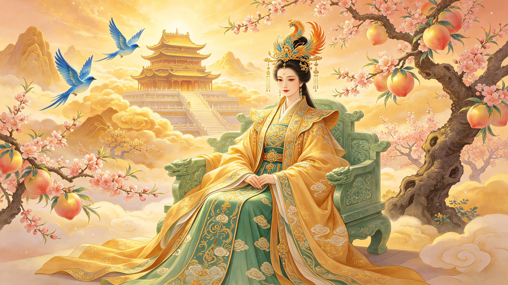

Empress of Immortality
西王母
She who tends the Peaches of Immortality in the orchards of Kunlun. Co-sovereign of heaven, matriarch of the celestial court — the goddess whose fruit can grant 3,000 years of life with a single bite.
Who is the Queen Mother of the West? She is the supreme goddess of Chinese mythology — co-ruler of the celestial realm alongside the Jade Emperor. Her Chinese name, Xiwangmu (西王母), literally means "Queen Mother of the West." She governs the western quadrant of heaven from her palace on Kunlun Mountain, the cosmic axis where earth meets sky. Unlike the Jade Emperor, who ascended through cultivation, Xiwangmu is a primordial deity — one of the oldest figures in Chinese religion, appearing in oracle bone inscriptions from the Shang dynasty (c. 1600–1046 BCE). Originally depicted as a fearsome goddess with a leopard's tail and tiger's teeth, she evolved over centuries into the serene, majestic queen of immortal paradise. She is the oldest continuously worshipped female deity in Chinese history.
What are the Peaches of Immortality? In Xiwangmu's celestial orchards grow 3,600 peach trees divided into three tiers. The first tier blossoms every 3,000 years — eating its fruit grants immortality and a body light as air. The second tier blossoms every 6,000 years — eating its fruit grants eternal youth and the ability to fly among the clouds. The third and rarest tier blossoms every 9,000 years — its peaches grant eternal life equal to heaven and earth, lasting as long as the universe itself. When Sun Wukong discovered he had been excluded from the Peach Banquet, he ate every ripe peach in the garden — stealing what was meant to be the celestial court's exclusive privilege. This single act sparked the chain of events that led to the greatest rebellion heaven had ever seen.
What is her relationship with the Jade Emperor? In the dominant version of the myth, the Queen Mother of the West and the Jade Emperor are consorts who rule heaven jointly — he governing administration and justice, she governing immortality, ritual, and the inner court. They are the cosmic couple at the apex of the celestial hierarchy. She presides over the Peach Banquet, the most important social and ritual event in the divine calendar, where the hierarchy of heaven is reaffirmed and immortals renew their divine status. Some earlier traditions depict her as an independent, primordial sovereign who predates the Jade Emperor entirely — a goddess who met with ancient Chinese kings and emperors on her own authority.
The Queen Mother of the West did not begin as the serene empress of the Peach Garden. In the oldest Chinese texts — the Shang dynasty oracle bones and the Classic of Mountains and Seas (Shan Hai Jing, c. 4th century BCE) — she appears as a terrifying, wild deity: "a human figure with a leopard's tail and tiger's teeth, whose hair is always disheveled, who is skilled at whistling and wears a sheng crown." She lived not in a jade palace but in a mountain cave on Kunlun, attended by three blue birds who brought her food. She commanded epidemic diseases and the Five Punishments — she was a goddess of death as much as life. This primordial form is not a contradiction but a revelation: the goddess who once wielded terror became the goddess who grants eternal life. Her transformation from chthonic demon to celestial queen mirrors the evolution of Chinese religion itself — from shamanistic animism through organized Taoism to the grand synthesis of the imperial pantheon. She is the oldest surviving goddess in continuous Chinese worship, and her story is the story of Chinese spirituality itself.
Kunlun Mountain is the most sacred location in Chinese cosmology — the axis mundi where heaven and earth meet, the source of the Yellow River, and the residence of the highest gods. Xiwangmu's palace complex rises from its summit: jade terraces stacked nine layers high, surrounded by walls of solid gemstone, guarded by the Openbright Beast — a creature with nine human faces and a tiger's body. The mountain is described as so tall that its shadow cannot be measured by any human instrument. Within its walls grow the 3,600 peach trees of immortality, irrigated by a Jade Spring whose waters grant wisdom to all who drink. To the west of Kunlun lies the place where Nüwa once gathered the five-colored stones to repair the sky. To its east, the sun rises through the Fusang tree where the ten sun-crows once nested before the archer Hou Yi shot nine of them down. Kunlun is not merely a mountain — it is the center of the universe, and the Queen Mother is its sovereign. In the Taoist tradition, Kunlun became the model for all paradise realms — a template later echoed in descriptions of the Buddha's Western Paradise and the Taoist Penglai Isles of the Immortals.
The Peach Banquet (蟠桃会, Pantao Hui) is the most celebrated event in the divine calendar — a grand feast hosted by the Queen Mother where the Peaches of Immortality are distributed to the gods, buddhas, bodhisattvas, and immortals of the celestial hierarchy. It is simultaneously a religious ritual, a political summit, and a social celebration. The guest list is the definitive ranking of cosmic power: every invitation (or exclusion) is a statement of status. When the Queen Mother sent her fairy maidens to pick the peaches for one such banquet, they discovered that Sun Wukong — who had been appointed the lowly "Great Sage, Equal to Heaven" but was excluded from the feast — had consumed every ripe peach in the garden. This was not mere theft; it was the most profound insult in the celestial code. The Peach Banquet was the mechanism by which the hierarchy renewed itself, and one excluded figure had stolen the entire ceremony. The events that followed — Sun Wukong's rampage through heaven, the deployment of 100,000 celestial troops, the duel with Erlang Shen, and ultimately the intervention of the Buddha himself — all trace back to the Queen Mother's garden and the banquet she presided over.
From Shang dynasty oracle bones to the Taoist celestial court — tracing the 3,500-year evolution of China's oldest continuously worshipped goddess.
3,600 trees. Three harvest tiers. 9,000 years for the rarest fruit. The orchard at the center of the universe and the banquet that changed heaven forever.
The Monkey King's theft. The Queen Mother's response. The wars of heaven — when the matriarch of paradise faced existential threats to cosmic order.
The Peaches, the Jade Spring, the Sheng crown, the blue bird messengers — the sacred instruments of the goddess who holds the keys to eternal life.
The 3rd day of the 3rd lunar month. The Yaochi Palace. Xi Wang Mu temples from Beijing to Taipei — how worshippers approach the goddess today.
From the White Haired Maiden to Black Myth: Wukong — how the Queen Mother endures in art, opera, literature, and contemporary culture.
Send your words to the Queen Mother's jade palace. They will be carried on the wings of a blue bird and laid at the steps of the Peach Garden, preserved by the Empress of Immortality for eternity.
Dive Deeper